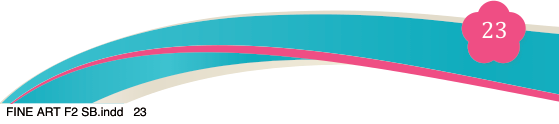
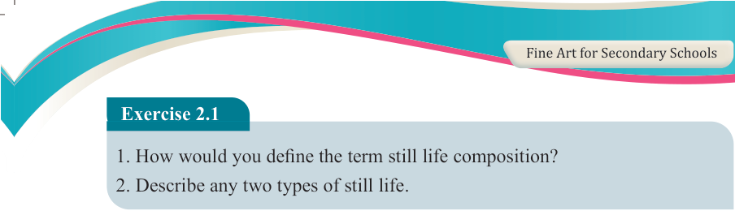
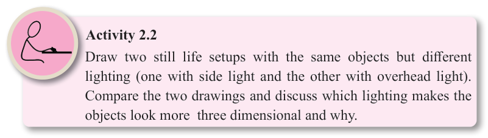

Fine Art for Secondary Schools

23

Student’s Book Form Two


Exercise 2.1
1. How would you define the term still life composition?
2. Describe any two types of still life.

Significance of still life composition
Still life compositions have various uses in society and are an integral part of fine art.
(a) Provide artistic experience: Still life composition provides you with more
experience in practising various artistic elements such as light, materials,
subject matter, and texture, in a controlled setting.
(b) Creating the illusion of three dimensions on a two- dimensional surface:
A two-dimensional surface is a shape with only width and length while a three- dimensional object is a form that has width, length and depth. In still life drawing a shape can be changed into form through the application of shade and light.
(c) Animate the inanimate: Still life compositions create life on lifeless objects, depict objects that we might never notice in daily experience and make us view them differently, see beauty in them and notice a variety of meanings from them.
(d) Setting the scene: Setting of the scene is selecting and harmoniously arranging inanimate objects on a flat surface. The setting of the scene itself has a great
impact on life because it improves reasoning. Artists spend time on arranging
and re-arranging the composition as many times as possible until he/she is satisfied with the result. This repetition positively impacts on how we make choices and in artistic creativity.
(e) Enrich human experience and contribute to cultural development.
(f) Serves as a medium for visual and narrative expressions.
(g) Reflecting historical and artistic movements.
(h) Offer opportunities to explore new painting techniques and creative approaches.

Activity 2.2
Draw two still life setups with the same objects but different lighting (one with side light and the other with overhead light).
Compare the two drawings and discuss which lighting makes the objects look more three dimensional and why.
04/08/2025 13:54